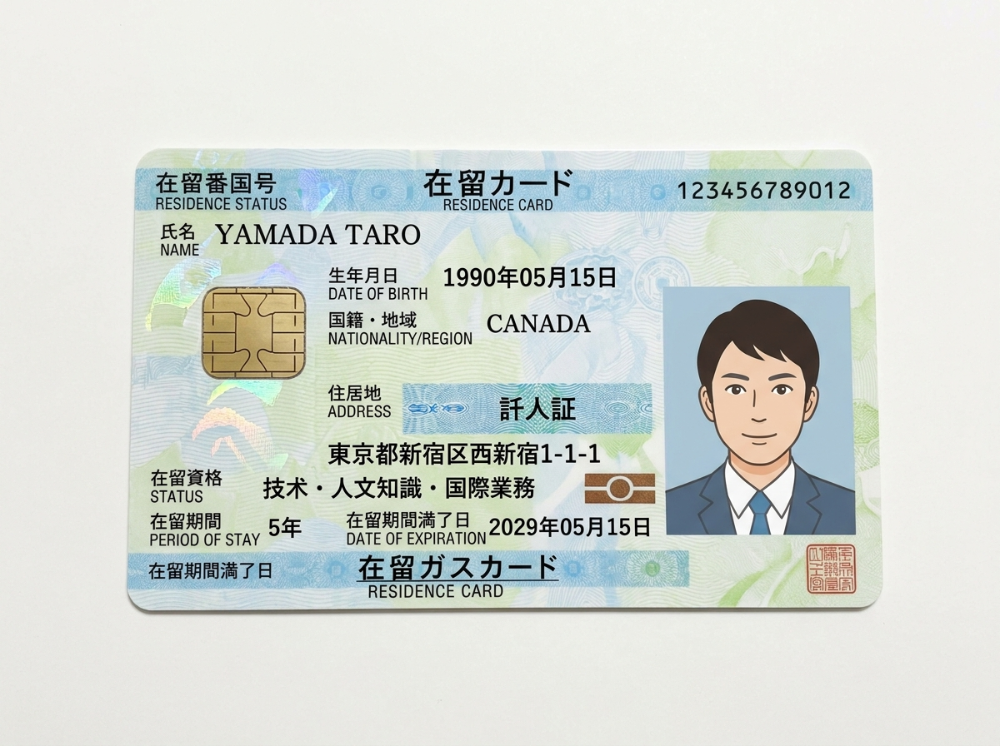
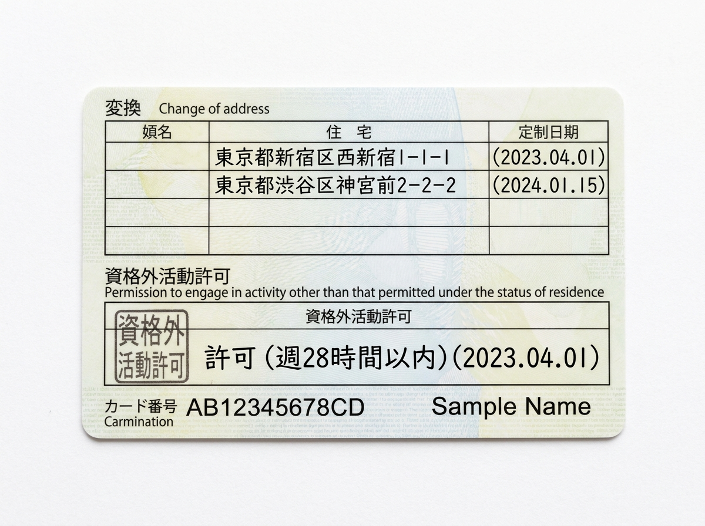

Apa itu Zairyu Card?
在留カードZairyu Card (在留カード, "Kartu Izin Tinggal") adalah kartu identitas resmi yang diterbitkan oleh Imigrasi Jepang untuk warga negara asing yang tinggal di Jepang dengan visa jangka menengah atau panjang, misalnya pekerja magang (Tokutei Ginou / Ginou Jisshu), pekerja Tokutei Gino, pelajar, maupun pemegang visa kerja lainnya.
Kartu ini berfungsi seperti KTP di Indonesia — menjadi bukti sah identitas dan status tinggal seseorang selama berada di Jepang, dan wajib dibawa ke mana pun kamu pergi.
Tampilan Zairyu Card
おもて・うらZairyu Card memiliki dua sisi — bagian depan berisi foto dan data pribadi, bagian belakang berisi keterangan tempat tinggal dan izin bekerja. Ganti gambar di bawah ini dengan foto Zairyu Card milikmu sendiri (atau contoh kosong untuk keperluan materi belajar).


Bagian-bagian Penting di Kartu
カードの見方Berikut informasi utama yang tertulis di Zairyu Card sisi depan:
| No | Bagian | Keterangan |
|---|---|---|
| 1 | 氏名 (Shimei) | Nama lengkap pemegang kartu, sesuai paspor |
| 2 | 生年月日 (Seinengappi) | Tanggal lahir |
| 3 | 性別 (Seibetsu) | Jenis kelamin |
| 4 | 国籍・地域 (Kokuseki/Chiiki) | Kewarganegaraan / negara asal |
| 5 | 在留資格 (Zairyu Shikaku) | Status/jenis visa, misalnya Tokutei Ginou, Ginou Jisshu, Ryugaku |
| 6 | 在留期間 (Zairyu Kikan) | Batas akhir masa tinggal — wajib diperpanjang sebelum tanggal ini |
| 7 | 在留カード番号 (Bangou) | Nomor unik kartu, format huruf-angka |
Kenapa Zairyu Card Sangat Penting?
なぜ大切？- Bukti identitas resmi — dipakai untuk membuka rekening bank, kontrak apartemen, dan langganan ponsel.
- Bukti izin tinggal & bekerja — perusahaan wajib memeriksa status visa lewat kartu ini.
- Wajib dibawa setiap saat — bisa diperiksa kapan saja oleh polisi atau petugas imigrasi.
- Terkait masa berlaku visa — tanggal di kartu menentukan kapan harus diperpanjang.
Perpanjangan Zairyu Card
在留期間更新Masa berlaku Zairyu Card mengikuti masa berlaku visa (在留期間). Sebelum tanggal habis masa berlaku, kamu wajib mengajukan perpanjangan di Kantor Imigrasi (入国管理局) terdekat.
- Pengajuan perpanjangan bisa dilakukan paling cepat 3 bulan sebelum tanggal habis masa berlaku.
- Dokumen yang biasanya diminta: Zairyu Card asli, paspor, formulir permohonan, foto terbaru, dan dokumen pendukung dari perusahaan/sekolah (misalnya slip gaji, surat keterangan kerja, atau surat rekomendasi).
- Proses biasanya memakan waktu 2–8 minggu tergantung kantor imigrasi dan jenis visa.
- Kalau disetujui, kamu akan menerima Zairyu Card baru dengan tanggal masa berlaku yang diperbarui.
Apabila Pindah Perusahaan
転職の場合Kalau kamu pindah kerja ke perusahaan lain (masih dalam jenis visa yang sama, misalnya sesama Tokutei Ginou), status Zairyu Card tetap berlaku, tapi kamu punya kewajiban melapor.
- Wajib melapor ke Kantor Imigrasi selambat-lambatnya 14 hari setelah berhenti dari perusahaan lama atau mulai kerja di perusahaan baru (契約機関に関する届出 / laporan lembaga kontrak).
- Perusahaan baru harus sesuai dengan jenis pekerjaan yang diizinkan dalam 在留資格 (status visa) kamu — kalau bidang pekerjaannya berbeda jauh, mungkin perlu perubahan status visa (在留資格変更許可), bukan sekadar laporan.
- Laporan bisa dilakukan langsung ke kantor imigrasi, lewat pos, atau secara online lewat sistem e-Notification Imigrasi Jepang.
Apabila Mengundurkan Diri
退職の場合Kalau kamu mengundurkan diri dari perusahaan tanpa langsung pindah ke perusahaan baru, statusmu di Jepang tetap harus dilaporkan.
- Wajib melapor ke Kantor Imigrasi dalam 14 hari sejak tanggal berhenti bekerja, meskipun belum ada perusahaan baru.
- Zairyu Card tidak otomatis dibatalkan, tapi kalau dalam jangka waktu tertentu (biasanya sekitar 3 bulan) kamu tidak melakukan aktivitas sesuai status visa (misalnya tidak bekerja lagi), visa bisa dicabut.
- Kalau berencana pulang ke Indonesia, urus juga proses "扱いの届出" (laporan keberangkatan) dan pastikan Zairyu Card dikembalikan di bandara saat keberangkatan (kecuali punya izin re-entry).
Apabila Zairyu Card Hilang
紛失の場合- Lapor ke kantor polisi (交番/警察署) terdekat untuk mendapatkan surat bukti kehilangan (遺失届受理証明書).
- Lapor ke Kantor Imigrasi selambat-lambatnya 14 hari setelah kartu hilang, sambil membawa surat bukti kehilangan dari polisi, paspor, dan foto terbaru.
- Ajukan penerbitan kartu pengganti — kamu akan mendapat Zairyu Card baru dengan nomor kartu yang berbeda dari kartu lama.